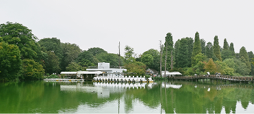

ABOUT KICHIJYOJI
吉祥寺とは？
「住みたい街ランキング」で常に上位に入るエリア。自然、公園、商店街、カフェ、文化施設がコンパクトにまとまり、生活感と観光が共存しています。

吉祥寺の歴史
駅を中心に発展し、戦後には横丁文化や小さな飲食店が広がりました。公園と街のバランスが良く、やがてカフェや雑貨店、映画館が集まり、今の「文化と暮らしの街」としての吉祥寺が形づくられました。


Copyright © 2025 KICHIJYOJI All Rights Reserved.